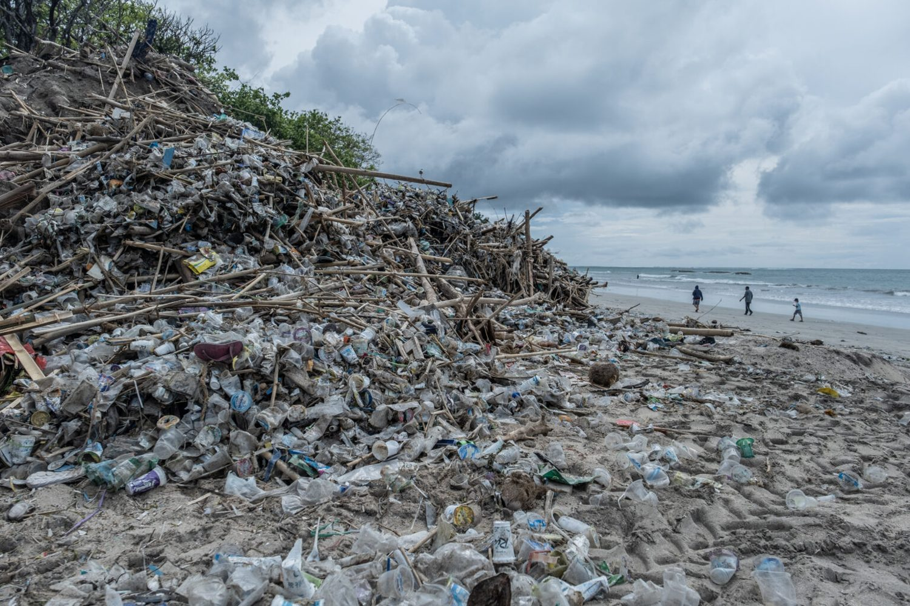
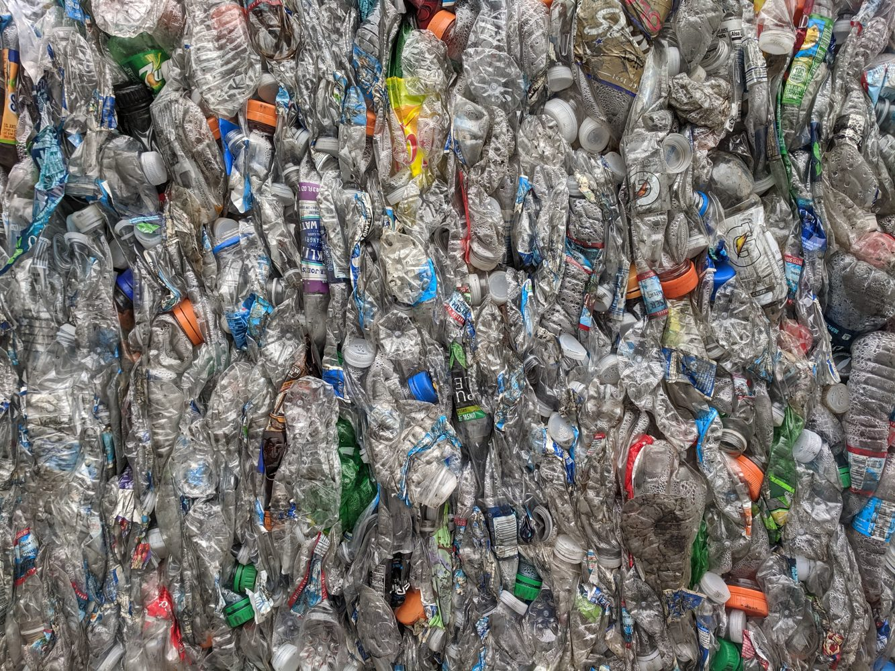

01
Pelaporan Sampah Liar
Form pelaporan lokasi, jenis sampah, tingkat urgensi, dan catatan lapangan agar titik masalah mudah diprioritaskan.
Baca DetailEcoBali Waste Hub adalah rancangan platform digital untuk membantu warga, pelaku usaha, dan komunitas lingkungan dalam melaporkan titik sampah liar, mempelajari pemilahan limbah rumah tangga, serta menyalurkan material bernilai melalui bank sampah digital.

Setiap laporan diarahkan menjadi data visual, rute penanganan, dan edukasi pemilahan agar masalah sampah tidak berhenti sebagai keluhan.
Desain dibuat sebagai tampilan depan platform digital yang dapat digunakan oleh penduduk lokal, pelaku bisnis, dan komunitas peduli lingkungan.
Form pelaporan lokasi, jenis sampah, tingkat urgensi, dan catatan lapangan agar titik masalah mudah diprioritaskan.
Baca DetailPanduan praktis memilah organik, plastik, kertas, logam, kaca, dan residu langsung dari rumah tangga.
Baca DetailSimulasi katalog material daur ulang agar sampah bernilai dapat disalurkan ke jejaring bank sampah dan mitra pengolah.
Baca Detail
Sampah pesisir perlu ditangani sebagai alur data: lokasi, volume, kategori material, dan status tindak lanjut.
Website tidak hanya menampilkan informasi, tetapi juga memperlihatkan alur kerja sederhana yang dapat dipahami oleh pengguna pertama kali.
Pengguna mengisi lokasi, jenis sampah, foto pendukung, dan level prioritas.
Relawan atau petugas dapat mengelompokkan laporan berdasarkan wilayah dan urgensi.
Material yang masih bernilai diarahkan ke bank sampah, sedangkan residu masuk jalur penanganan.
Pengguna menemukan titik sampah liar atau area yang membutuhkan pembersihan.
Data dikirim melalui form ringkas dengan pilihan kategori sampah dan urgensi.
Material dipisahkan berdasarkan potensi daur ulang, kompos, atau residu.
Material bernilai diarahkan ke bank sampah atau pelaku pengolahan lokal.
Halaman bank sampah menyimulasikan katalog material, rentang poin, jadwal setor, dan mitra pengelola agar pengguna melihat nilai ekonomi dari kebiasaan memilah.
Buka Marketplace
PET, kertas, kaleng, dan kardus dapat masuk ke jalur pemanfaatan ulang setelah dipilah.
EcoBali Waste Hub dirancang untuk mudah dibuka di berbagai perangkat, sehingga pengguna dapat mengakses panduan dan form laporan dari ponsel maupun laptop.